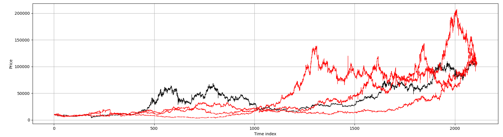
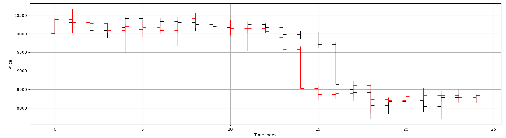
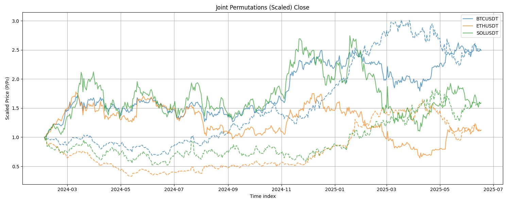
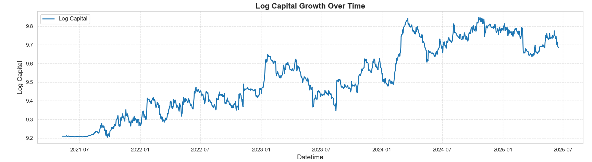
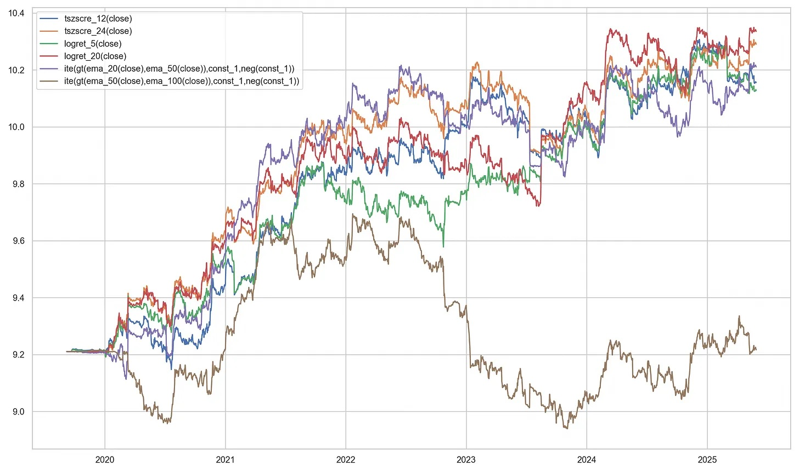
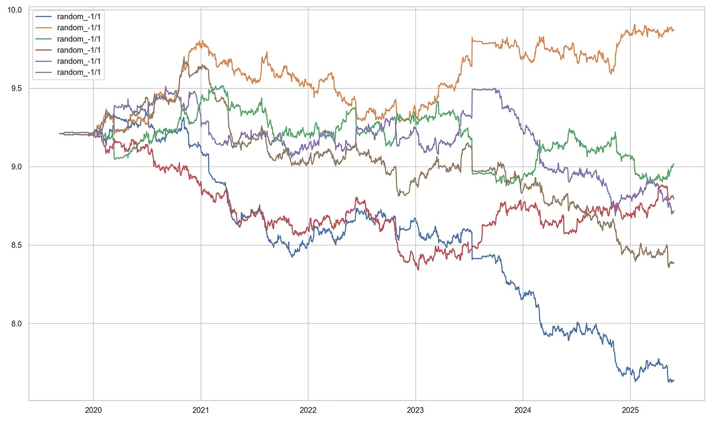

Statistical Finance
Permutation Sampling
In permutation sampling, we aim to destroy local temporal structure in financial time series while preserving global statistical properties such as marginal distributions, moments of distribution, or overall market drift.
This technique is particularly useful in statistical hypothesis testing: for example, to evaluate whether a trading strategy performs better than chance. By comparing strategy performance on real market data (where predictability may exist) against permuted data (where predictability is fully removed), we can assess the likelihood that observed performance arises from random chance.
Formally, given a time series \(\{x_t\}_{t = 1}^T\), we apply a random permutation \(\pi: [T] \rightarrow [T]\) to obtain
where \(x_t\) denotes some stationary distribution. If only univariate values are permuted, the autocorrelation is destroyed, but the moments are preserved. In contrast, multivariate permutations (e.g., row-wise permutations of bar data) preserve cross-sectional structure and marginal distributions while eliminating temporal dependencies.
Even though synthetic data such as Brownian motion or Brownian bridges can be used to generate price paths, they introduce new assumptions and modify multiple statistical properties simultaneously. In scientific procedures, we aim to control all variables except the one under investigation — otherwise, conclusions are confounded by uncontrolled factors.
Permutation methods offer a principled alternative: they destroy temporal structure (and thus predictability) while preserving other features of the data. This makes them ideal for scientific experiments.
Univariate (Price) Permutations
In univariate permutation sampling, we focus on transforming a single price series — such as closing prices — by permuting its internal structure while preserving global properties such as overall trend.
Here, we seek a variant that preserves the initial and final price levels, ensuring the global drift remains intact. This is achieved by permuting the log returns (or equivalently, the log price differences), which are assumed to be approximately stationary, then reconstructing the price path via exponentiation.
Let \(\{P_t\}_{t = 0}^{T}\) denote the original price series. Define the log returns:
We apply the permutation algorithm to \(\{D_t\}\), obtaining a permuted sequence \(\{D_t'\}\).
To generate a member of a permutation set
def permutation_member(array):
i = len(array)
while i > 1:
j = int(np.random.uniform(0, 1) * i)
if j >= i: j = i - 1
i -= 1
array[i], array[j] = array[j], array[i]
return array
We then reconstruct the permuted log price path by cumulative summation:
and exponentiate the result to obtain the new permuted price series.
def permute_price(price):
log_prices = np.log(price)
diff_logs = log_prices[1:] - log_prices[:-1]
diff_perm = permutation_member(diff_logs)
cum_change = np.cumsum(diff_perm)
new_log_prices = np.concatenate(([log_prices[0]], log_prices[0] + cum_change))
new_prices = np.exp(new_log_prices)
return new_prices
# Example usage
permuted_price = permute_price([3, 1, 2, 4, 5, 4, 6, 4])
print(permuted_price)
# [3.0000, 6.0000, 4.8000, 9.6000, 14.399, 4.8000, 3.2000, 4.0000]
This method preserves the first and last price, destroys temporal dependence, and retains the marginal distribution of log returns. It provides a robust null model for hypothesis testing when testing for time-dependent structure in univariate financial series.
When working with multiple price series from different instruments, we aim to preserve the inter-series structure (e.g., cross-instrument correlation) while eliminating only temporal dependencies.
Applying independent permutations to each price series destroys their joint distribution, including cross-asset dependencies and synchronized drawdowns. This can distort portfolio-level risk metrics and undermine hypothesis tests designed to isolate time-series predictability.
To address this, we generalize the permutation method by applying a single shared permutation index across all series. This preserves the joint distribution of returns across instruments while removing their individual serial structure.
def permute_price(price, permute_index=None):
if permute_index is None:
permute_index = permutation_member(list(range(len(price) - 1)))
log_prices = np.log(price)
diff_logs = log_prices[1:] - log_prices[:-1]
diff_perm = diff_logs[permute_index]
cum_change = np.cumsum(diff_perm)
new_log_prices = np.concatenate(([log_prices[0]], log_prices[0] + cum_change))
new_prices = np.exp(new_log_prices)
return new_prices
def permute_multi_prices(prices):
assert all(len(price) == len(prices[0]) for price in prices)
permute_index = permutation_member(list(range(len(prices[0]) - 1)))
new_prices = [permute_price(price, permute_index=permute_index) for price in prices]
return new_prices
Example for Shared Index
This shared-index approach ensures that all series undergo the same reordering of returns, thereby preserving inter-series alignment. It is suitable for evaluating the statistical significance of multi-instrument strategies, including long-short spreads, mean-reversion baskets, and cross-sectional alpha signals.
Multivariate (Bar) Permutations
In many practical settings, we work with multivariate time series data, such as OHLCV bars or engineered features per time step. Each time point \(t \in [T]\) is associated with a vector \(\mathbf{x}_t \in \mathbb{R}^d\), where \(d\) denotes the number of features (e.g., open, high, low, close, volume, technical indicators, etc.).
Unlike univariate series, there is no universally accepted method for permuting multivariate data. Since such data often arise from dynamic systems with complex temporal and cross-feature dependencies, care must be taken to preserve internal structure while destroying serial correlations.
We illustrate this using OHLCV bars, also known as candlesticks. These may be constructed using time-based sampling or entropy-based sampling schemes such as information bars. Our key goal is to preserve bar-level structure (intra-bar) while eliminating time dependence (inter-bar).
Intra-bar structure. Each bar comprises price levels: open \(O_t\), high \(H_t\), low \(L_t\), and close \(C_t\). Rather than permuting absolute values, we first log-transform the prices and define:
These deltas characterize the internal geometry of each bar and remain approximately stationary after log-transformation.
Inter-bar structure. A natural candidate for inter-bar relationship is the jump between a bar's close and the next bar's open:
These differences capture market microstructure effects such as gaps or jumps, and may encode serial correlation, trend, or time-dependent structure, including effects like the well-known overnight effect.
Volume data. Volume is particularly challenging to permute. It may be stationary or non-stationary depending on the asset and sampling method, and can exhibit strong periodic effects (e.g., time-of-day, day-of-week seasonality). Since volume interacts with both price levels and bar duration, careless permutation may distort the joint distribution of intra- and inter-bar features.
To implement the controlled permutation of multivariate OHLCV bars, the observe the following procedure:
- Log-transform the OHLCV dataframe.
- Compute the intra-bar differences \(\Delta_H\), \(\Delta_L\), \(\Delta_C\).
- Permute these intra-bar differences (excluding the first row) using a common permutation index.
- Compute the inter-bar open-to-close jumps \(\Delta_{OC,t} = O_{t+1} - C_t\) and permute them independently.
- Reconstruct the full price path iteratively:
- Start from the first close.
- Add a (permuted) \(\Delta_{OC,t}\) to compute each new open.
- Add (permuted) intra-bar deltas to get the high, low, and close.
- Volume is permuted alongside the intra-bar deltas, preserving the endpoints.
- The resulting log-prices are exponentiated and reassembled into a new dataframe with the original index.
import numpy as np
import pandas as pd
def permute_bars(ohlcv, index_inter_bar=None, index_intra_bar=None):
if not index_inter_bar:
index_inter_bar = permutation_member(list(range(len(ohlcv) - 1)))
if not index_intra_bar:
index_intra_bar = permutation_member(list(range(len(ohlcv) - 2)))
log_data = np.log(ohlcv)
delta_h = log_data["high"].values - log_data["open"].values
delta_l = log_data["low"].values - log_data["open"].values
delta_c = log_data["close"].values - log_data["open"].values
diff_deltas_h = np.concatenate((delta_h[1:-1][index_intra_bar], [delta_h[-1]]))
diff_deltas_l = np.concatenate((delta_l[1:-1][index_intra_bar], [delta_l[-1]]))
diff_deltas_c = np.concatenate((delta_c[1:-1][index_intra_bar], [delta_c[-1]]))
new_volumes = np.concatenate(
(
[log_data["volume"].values[0]],
log_data["volume"].values[1:-1][index_intra_bar],
[log_data["volume"].values[-1]]
)
)
inter_open_to_close = log_data["open"].values[1:] - log_data["close"].values[:-1]
diff_inter_open_to_close = inter_open_to_close[index_inter_bar]
new_opens, new_highs, new_lows, new_closes = \
[log_data["open"].values[0]], \
[log_data["high"].values[0]], \
[log_data["low"].values[0]], \
[log_data["close"].values[0]]
last_close = new_closes[0]
for i_delta_h, i_delta_l, i_delta_c, inter_otc in zip(
diff_deltas_h, diff_deltas_l, diff_deltas_c, diff_inter_open_to_close
):
new_open = last_close + inter_otc
new_high = new_open + i_delta_h
new_low = new_open + i_delta_l
new_close = new_open + i_delta_c
new_opens.append(new_open)
new_highs.append(new_high)
new_lows.append(new_low)
new_closes.append(new_close)
last_close = new_close
new_df = pd.DataFrame(
{
"open": new_opens,
"high": new_highs,
"low": new_lows,
"close": new_closes,
"volume": new_volumes
}
)
new_df = np.exp(new_df)
new_df.index = ohlcv.index
return new_df
When working with multiple instruments, we apply a common permutation index across all bars to maintain co-movement:
def permute_multi_bars(bars):
assert all(len(bar) == len(bars[0]) for bar in bars)
index_inter_bar = permutation_member(list(range(len(bars[0]) - 1)))
index_intra_bar = permutation_member(list(range(len(bars[0]) - 2)))
new_bars = [
permute_bars(
bar,
index_inter_bar=index_inter_bar,
index_intra_bar=index_intra_bar
)
for bar in bars
]
return new_bars
Although the algorithm in the multiple bars permutation works well in theory, it oversimplifies the problem of shuffling real-world financial data — particularly when the testing framework involves a dynamic universe of trading instruments. In practice, portfolios are composed of assets with non-overlapping lifespans: instruments are regularly listed, delisted, or temporarily suspended from trading.
A common preprocessing step in backtesting is to forward-fill and then back-fill missing data so that all instruments align on a shared date axis. However, this may introduce synthetic data for inactive periods, violating the assumption that a given asset was actually tradable throughout the full time range.
Consider a return series for an instrument that only recently became active:
Clearly, the permuted sequence \(R'\) is invalid — the non-zero returns have been shifted into periods where the instrument was not alive. To ensure semantic correctness, we must avoid permuting time steps where the instrument was inactive.
To safely permute OHLCV bars, we must first restrict attention to time intervals where all instruments were simultaneously alive. This ensures that shared permutation indices do not introduce artefacts due to inactivity.
For instruments with unequal lifespans, we propose a more flexible method: decompose the full time axis into maximally overlapping alive windows of equal length, apply permutations independently within each window, and then stitch the locally permuted segments together. This preserves statistical control while respecting each asset's period of activity.
Since neither the first nor the last bar is modified during each local permutation, the global series remains semantically valid. However, this localized approach alters the combinatorics of the sampling procedure: rather than permuting the entire dataset globally, we now apply independent permutations within each local window.
Formally, let the time axis be partitioned into \(K\) local regions, with region \(k \in [K]\) containing \(n_k\) permutable elements. The total number of distinct global permutations obtainable is then:
in contrast to the global permutation count
Since \(\prod_{k=1}^K n_k! < N!\) for \(K > 1\), this results in a strictly smaller permutation space. The penalty is a lower number of distinct simulated paths, which reduces entropy in the null distribution.
Nonetheless, for sufficiently large datasets, this reduction is unlikely to materially affect the statistical power of permutation-based inference. A more important drawback is that serial structure may not be as thoroughly destroyed — particularly across window boundaries. However, this is a reasonable trade-off to ensure the algorithm remains valid and implementable under real-world constraints of a dynamically evolving universe.
When these permutations are applied within a Monte Carlo permutation testing framework, the incomplete destruction of serial dependence leads to a conservative estimate of the \(p\)-value. This manifests as a loss of power in the statistical test.
The modified algorithm for multi-bar permutations is shown below:
"""
Input:
bars: list of pandas DataFrames, each containing OHLCV data for one instrument.
Each DataFrame must:
- Have columns: ["open", "high", "low", "close", "volume"]
- Be indexed by datetime (or sortable time index)
- Be sorted in ascending time order
Assumptions:
- bars[i] and bars[j] may have different date indices.
- The function handles both:
(i) Equal-length, aligned bars with shared time index
(ii) Unequal-length bars with overlapping time windows
"""
from collections import defaultdict
def permute_multi_bars(bars):
index_set = set(bars[0].index)
if all(set(bar.index) == index_set for bar in bars):
index_inter_bar = permutation_member(list(range(len(bars[0]) - 1)))
index_intra_bar = permutation_member(list(range(len(bars[0]) - 2)))
new_bars = [
permute_bars(
bar,
index_inter_bar=index_inter_bar,
index_intra_bar=index_intra_bar
)
for bar in bars
]
else:
bar_indices = list(range(len(bars)))
index_to_dates = {k: set(list(bar.index)) for k, bar in zip(bar_indices, bars)}
date_pool = set()
for index in list(index_to_dates.values()):
date_pool = date_pool.union(index)
date_pool = list(date_pool)
date_pool.sort()
partitions, partition_idxs = [], []
temp_partition = []
temp_set = set([idx for idx, date_sets in index_to_dates.items() if date_pool[0] in date_sets])
for i_date in date_pool:
i_insts = set()
for inst, date_sets in index_to_dates.items():
if i_date in date_sets:
i_insts.add(inst)
if i_insts == temp_set:
temp_partition.append(i_date)
else:
partitions.append(temp_partition)
partition_idxs.append(list(temp_set))
temp_partition = [i_date]
temp_set = i_insts
partitions.append(temp_partition)
partition_idxs.append(list(temp_set))
chunked_bars = defaultdict(list)
for partition, idx_list in zip(partitions, partition_idxs):
permuted_bars = permute_multi_bars(
[bars[idx].loc[partition] for idx in idx_list]
)
for idx, bar in zip(idx_list, permuted_bars):
chunked_bars[idx].append(bar)
new_bars = [None] * len(bars)
for idx in bar_indices:
new_bars[idx] = pd.concat(chunked_bars[idx], axis=0)
return new_bars
In the permutation of bars at finer-than-daily granularity (i.e., intra-day data), we apply the bar permutation algorithm as a subroutine to each day independently. Additionally, we permute the sequence of overnight gaps — one per day — and use this to stitch together the full price series. This approach preserves important features of financial data: each intra-day sample is permuted independently to retain volatility heterogeneity reflective of real market behavior, while the global trend remains fixed via invariant endpoints.
However, like all bar permutation methods, this procedure disrupts volatility clustering — a well-documented stylized fact in asset returns. Traditional bootstrap approaches suffer from the same limitation, offering no improvement in this regard.
A demonstration of the algorithms are shown on real-life data. The data are obtained from public feeds on Binance perpetual futures for BTCUSDT, ETHUSDT, and SOLUSDT.
We begin with OHLCV data structured as a list of pandas DataFrames as bars:
bars = [
# BTCUSDT sample
# datetime open high low close volume
2019-09-08 00:00 10000.00 10412.65 10000.00 10391.63 3096.291
2019-09-09 00:00 10316.62 10475.54 10077.22 10307.00 14824.373
2019-09-10 00:00 10307.00 10382.97 9940.87 10102.02 9068.955
... ... ... ... ... ...
2025-06-16 00:00 105534.70 108900.00 104920.00 106750.10 166813.219
2025-06-17 00:00 106750.10 107727.40 106021.70 106106.60 66846.686
# ETHUSDT sample
# datetime open high low close volume
2019-11-27 00:00 146.00 155.66 125.03 152.52 115911.800
2019-11-28 00:00 154.29 156.52 146.41 150.48 116824.100
2019-11-29 00:00 150.56 157.40 150.55 154.41 167906.100
... ... ... ... ... ...
2025-06-16 00:00 2546.32 2680.00 2513.38 2543.12 7101650.000
2025-06-17 00:00 2543.11 2617.74 2524.00 2566.31 2656882.000
# SOLUSDT sample
# datetime open high low close volume
2020-09-14 00:00 3.2002 4.9100 3.2002 3.2661 4788171.00
2020-09-15 00:00 3.2629 3.3258 2.9001 2.9332 4318305.00
2020-09-16 00:00 2.9299 2.9299 2.4316 2.5395 5698128.00
... ... ... ... ... ...
2025-06-16 00:00 152.8800 158.6800 150.2400 150.6700 24626504.10
2025-06-17 00:00 150.6700 154.2900 147.4100 151.4200 10711158.30
]
Each DataFrame records daily bars indexed by UTC timestamps.
Rows are truncated for brevity. Note that the data ranges are
not equal across instruments, but the algorithm handles dynamic changes
in the universe.
We illustrate how the permutation affects marginal distributions. For the period from 2019-09-08 to 2025-06-17, the BTCUSDT series contains 2110 data points. After permuting jointly \( k = 3 \) times, we plot the marginal price paths using a Japanese candlestick plot.
import numpy as np
import matplotlib.pyplot as plt
k = 3
def plot_japanese_candles(orig, perms):
fig, ax = plt.subplots(figsize=(15, 6))
x = np.arange(len(orig))
for i in x:
o, h, l, c = orig.iloc[i][['open', 'high', 'low', 'close']]
ax.vlines(i, l, h, color='black', linewidth=1)
ax.hlines(o, i - 0.2, i, color='black', linewidth=2)
ax.hlines(c, i, i + 0.2, color='black', linewidth=2)
for perm in perms:
for i in x:
o, h, l, c = perm.iloc[i][['open', 'high', 'low', 'close']]
ax.vlines(i, l, h, color='red', linewidth=1)
ax.hlines(o, i - 0.2, i, color='red', linewidth=2)
ax.hlines(c, i, i + 0.2, color='red', linewidth=2)
ax.set_xlabel("Time index")
ax.set_ylabel("Price")
ax.grid(True)
plt.tight_layout()
plt.show()
perms = [permute_multi_bars(bars) for _ in range(k)]
for i, original in enumerate(bars):
perm_samples = [perms_j[i] for perms_j in perms]
plot_japanese_candles(
original,
perms=perm_samples
)
We obtained the following plots 
In red, we show the permuted price paths; in black, the original series.
While the global drift is preserved, all temporal structure has been destroyed
in the permuted walks. A cruel but illuminating exercise is to challenge
technical analysts to identify so-called ``head-and-shoulders'' patterns
on these purely random paths. This is no jibe to discretionary traders -
an equally disturbing exercise would reveal that
quantitative strategists, armed with modern machine learning tools,
commit statistical overfitting — a sin no less severe than the
confirmation bias found in technical analysis.
To illustrate the Japanese candlestick representation more clearly, a subsample of 25 consecutive data points is extracted from the BTCUSDT series.
Figure below shows the original price path (black)
alongside a single permuted path (red).
We should verify that key stylized facts are preserved in our permutations.
An example we have taken care to preserve is the distribution of
close-to-next-open jumps. Market microstructure effects such as gaps and overnight jumps
are not inadvertently distorted. In cryptocurrency futures - this is not particularly interesting
since the markets do not close, but would be pertinent in say, equities data.

We also verify that the joint dependence among correlated instruments is preserved. We take the last \( n = 500 \) overlapping data points and plot their growth paths, each scaled to its initial value. The dotted lines represent the permuted price paths. We observe that the original series are jointly dependent, and so are the permuted series: temporal structure is destroyed both locally and globally, but cross-sectional dependencies remain intact. Consequently, derived models such as static factor models are invariant under the permutation procedure.

The algorithms thus provides a robust foundation for use as a control in scientific experiments investigating machine learning of temporal effects.
Statistical Inferencing for Quantitative Strategies
Let us conduct a thought experiment: suppose we wish to design a scientific experiment to test whether a hedge fund manager can truly identify anomalies and trading opportunities from market data.
Backed by patriotic investors, his fund is constrained by a long-only mandate in U.S. equities. He may have performed exceedingly well during an extended bull market — but is this success evidence of genuine skill, or simply the result of swimming with the tide?
If we were to replace his stock selection with random dice rolls, his long-only mandate would still yield respectable returns. This form of return decomposition is standard: such profits are attributed to the portfolio's exposure to market \(\beta\).
To assess genuine skill, we are interested in whether the manager has delivered positive risk-adjusted excess returns or has, colloquially, alpha:
Under the factor approach, we assume
where \(\alpha_i\) represents the manager's skill, \(\beta_i\) denotes factor exposure, \(F_t\) are systematic factor returns, and \(\varepsilon_{it}\) is idiosyncratic noise.
While the factor model allows us to formalize statements about expected returns, its primary role is to decompose portfolio risk into systematic (factor) and idiosyncratic risk, rather than to establish the statistical significance of excess returns. Moreover, we wish to go beyond the restrictive returns framework to a more general metrics framework.
Motivated by return decomposition, we also aim to build a theoretical framework that separates trader skill into asset selection and asset timing components.
The theoretical aspects and study of statistical inferencing procedures, including both parametric and non-parametric methods, as well as the general theory of hypothesis testing.
Our discussion spans different phases of the quantitative trading pipeline. In particular, we examine validation procedures during early-stage model development on in-sample data, as well as rigorous downstream validation on artefacts using out-of-sample data.
We also address both single-strategy portfolios and multi-strategy portfolios, including validation techniques that provide strong control of the familywise error rate in the context of "alpha farms."
A variety of statistical tools are covered, including parametric and non-parametric tests, confidence intervals, \(p\)-value-based tests, and \(\epsilon\)–\(\delta\) approaches.
Let's introduce some notations. A trading system typically consists of a sequence of position vectors (or equivalently, weight vectors) and the corresponding return vectors that generate the portfolio return series.
Let there be \(p\) instruments. Denote the weight vector on day \(t\) by \(\mathbf{w}_t \in \mathbb{R}^p\), and the asset return vector from day \(t\) to \(t+1\) by \(\mathbf{r}_t \in \mathbb{R}^p\). Let the portfolio leverage on day \(t\) be the scalar \(\ell_t\).
We impose the constraint:
The portfolio return from day \(t\) to \(t+1\) is then:
The cumulative performance over the test period is:
Monte Carlo Permutation Methods
In the context of data permutations, we refer to multivariate bar permutations as discussed in Permutation Sampling. This section extends the exercise on Monte Carlo permutation testing from non-parametric statistical inferencing techniques.
The daily returns
are an ordered pairing between the trader’s decision logic \(\{\ell_t, \mathbf{w}_t\}_{t \in [T]}\) and the market data sequence \(\{\mathbf{r}_t\}_{t \in [T]}\).
This pairing can be destroyed by permuting either the decision sequence or the market data series. For instance, suppose we shuffle the market data to obtain a permuted series \(\{\mathbf{r}_t'\}_{t \in [T]}\). The cumulative return under the original decisions but random market sequence is then:
This provides a principled way to compare the realized performance under the trader’s rule-based pairing against performance when the pairing is randomized.
We may then test the null hypothesis that the original rule-pairing is effectively random and hence has no predictive power.
One exercise gives the sampling distribution for such a test. In particular, if we perform \(M\) random permutations, then under the null hypothesis, the original performance is equally likely to rank anywhere among the \(M+1\) total outcomes. Thus, the probability that the original series ranks at least \(j\)-th best is
Stated equivalently, there is a probability of \(\frac{k+1}{M+1}\) that at most \(k\) of the permuted samples achieve performance at least as good as the original.
At this stage, it is worth clarifying a technical subtlety that might confuse the reader. Suppose we evaluate a given performance statistic \(x\) and run two shuffled trials, observing that the original value \(x\) is the best among the three.
Under the null hypothesis of a worthless model, the probability that \(x\) exceeds the performance of any single shuffled trial is \(\frac{1}{2}\). One might be tempted to multiply these pairwise probabilities, yielding \(\frac{1}{2}^2 = \frac{1}{4}\), which differs from the permutation rank-based p-value \(\frac{1}{3}\).
This discrepancy arises because these two p-values answer different questions. The pairwise probability \(\frac{1}{4}\) corresponds to the sign test, which tests
that is, whether the true median performance equals the observed value.
However, this is not what we test in the permutation framework. Here, we test whether the specific value of \(x\) is unusually large relative to what would be expected under random pairing.
The permutation test conditions on the empirical distribution generated by the random reorderings, which properly accounts for finite-sample rank uncertainty rather than pairwise independence.
Depending on the implementation, the leverage \(\ell_t\) may depend on the strength of the signal, the risk control component of the trading system, or both. Suppose we wish to isolate the predictive ability of the strategy independent of its risk management logic. In that case, we may fix leverage and compare the value:
where the weight sequence \(\{\mathbf{w}_t\}\) is kept fixed and only the market return sequence is permuted.
More generally, the cumulative return is merely one possible performance criterion. It can be replaced by any user-defined objective function, which we shall denote:
Since the permutation-based \(p\)-value is discrete by construction, we use a large number of permutations, \(M \gg 0\), to better approximate the null distribution.
In the case of paired samples, such as the ordered sequence \(\{ (\mathbf{w}_t, \mathbf{r}_t) \}_{t = 1}^T\), it is a sufficient condition for exchangeability that at least one component of each pair is serially uncorrelated.
In practice, the weight vector sequence \(\{\mathbf{w}_t\}\) does not generally satisfy this property, since trading decisions are typically computed using rolling windows of market data, resulting in overlap and serial dependence.
In contrast, the return series \(\{\mathbf{r}_t\}\) can often be assumed to have weak or negligible serial correlation in its first moment — while it is common knowledge that their second moments \(\{ r_t^2 \}\) exhibit serial dependence. Therefore, our permutation test remains valid in this setting.
If we have access to the full feature matrix \(\mathbf{X}\) and the strategy logic, we can pass each permuted input \(\mathbf{X}^{(j)}\) into the strategy logic to generate a new sequence of decision and return vectors from the raw feature primitives.
In contrast, in the present context we assume that only the decision vectors \(\{ \ell_t, \mathbf{w}_t \}\) and return vectors \(\{ \mathbf{r}_t \}\) are available as artefacts of the original backtest. Consequently, the permutation test operates at a level of abstraction.
If we have access to the underlying strategy as a black box, we can go one step further: we permute the primitive features directly and pass each permuted input into the strategy to regenerate decisions and return vectors. This tests whether the strategy extracts genuine temporal signals from the primitive features rather than overfitting to artefactual noise.
In the following, we formalize hypothesis testing under these various assumptions about the availability of trading system components. The practical implementation details and code are provided in the next section: A Python Implementation.
Tests for Singular Strategy
In quantitative strategy development, the workflow is typically split into in-sample modeling and out-of-sample (OOS) validation. Hold-out samples are precious: once used, they lose their power as an unbiased test of real-world performance. Therefore, we aim to perform all possible fitting and stress-testing in-sample, and if we can disprove a trading strategy at this stage, we should — saving scarce OOS data for only genuinely promising models. To quantify how much in-sample performance is attributable to overfitting rather than genuine signal, we employ the following permutation test that tells us how good our in-sample results are in relation to how good our overfitting is.
Monte Carlo Permutation Test for In-Sample Overfit Detection
Assume that the full trading machinery is available, including any systematic in-sample optimization procedures. Let
denote a scalar performance criterion (e.g., cumulative return or Sharpe ratio) computed on the original market data and decisions.
Null hypothesis
where \(\mathfrak{S}_T\) denotes the set of all permutations of \([T]\).
Equivalently, the trading system possesses no genuine predictive power: any apparent in-sample performance arises purely from overfitting to noise.
Permutation procedure
-
Generate \(M\) i.i.d. permutations of the market data sequence using a valid shuffling method (e.g., price or bar permutation).
-
For each permuted sequence, re-run the full trading machinery (including the optimizer) to obtain new decisions and compute:
- Let \(\psi_{\mathrm{obs}}\) be the value obtained on the original (unshuffled) data.
Test statistic
The permutation-based \(p\)-value is:
Under \(H_0\), this is the probability that a random realization of the strategy on permuted data produces performance at least as good as the original in-sample value.
Now, assume we have access to the realized leverage, weight, and return series \(\{\ell_t, \mathbf{w}_t, \mathbf{r}_t\}_{t=1}^T\) produced by running a model on out-of-sample (OOS) data. These may come from a fully out-of-sample run using a fixed specification, from an in-sample calibrated model evaluated on a hold-out set, or from a walk-forward procedure.
In this setting, we have an unbiased estimate \(\psi(\{\ell_t, \mathbf{w}_t, \mathbf{r}_t\})\) of performance. We wish to test whether the observed OOS performance is due to true asset timing skill rather than passive exposure to market drift or persistent positive returns in individual assets.
To do so, we permute the return sequence while holding the decision vectors fixed, efficiently simulating a world with no predictable timing signal. This requires neither the original strategy logic nor its optimizer, making the test computationally simple and general.
The procedure isolates timing skill: the weight assigned to each asset over the entire period remains fixed, while its allocation in time is shuffled. This controls for asset picking ability and tests whether the manager effectively timed changes in exposure.
Monte Carlo Permutation Test for Out-of-Sample Asset Timing Skill
Let
denote a scalar performance criterion (e.g., cumulative return or Sharpe ratio) computed from a model applied to out-of-sample data.
Null hypothesis
where \(\mathfrak{S}_T\) denotes the set of all permutations of \([T]\).
Equivalently, the strategy possesses no true timing skill: its performance arises purely from exposure to drift and asset-level return persistence.
Permutation procedure
-
Generate \(M\) i.i.d. permutations of the time index by sampling \(\pi_i \in \mathfrak{S}_T\) for \(i \in [M]\).
-
For each \(\pi_i\), define the permuted returns \(\mathbf{r}_t^{(i)} = \mathbf{r}_{\pi_i(t)}\), and compute:
The decision vectors \(\{\ell_t, \mathbf{w}_t\}\) remain unchanged.
- Let \(\psi_{\mathrm{obs}}\) be the original value on unshuffled data.
Test statistic
The permutation-based \(p\)-value is:
Under \(H_0\), this is the probability that the strategy achieves performance at least as good as \(\psi_{\mathrm{obs}}\) purely by chance, with no timing skill beyond static asset exposure. We refer to this value as the timer's \(p\)-value.
To see more clearly that this test isolates asset timing rather than asset picking, consider a simple example. Suppose the universe consists of ten assets indexed \(1, \ldots, 10\). The first five assets have consistent positive returns over the test period, while the last five consistently decline, so that the aggregate market drift is zero.
Assume the strategy has perfect asset selection: it remains long the first five and short the last five throughout, with a constant weight vector, for example,
Since the weights do not change over time, permuting the return sequence in time does not affect the average exposure to each asset: the strategy stays systematically long the winners and short the losers, regardless of how time indices are shuffled.
As a result, the test statistic remains large under permutation, and the permutation \(p\)-value is not small. We therefore fail to reject the null hypothesis, concluding that there is no evidence of timing skill — correctly so, because all excess return arises purely from static asset picking, not from dynamic variation over time.
Thus, this test specifically quantifies the value added by changing the weights through time — the asset timing component — conditional on the given cross-sectional exposures.
In a similar setting, to test whether our performance reflects genuine asset picking skill rather than random allocation, we permute the cross-sectional mapping of returns at each time step while holding the decision series fixed in time. This leaves the timing structure intact but disrupts which instruments are linked to each weight. The resulting statistic quantifies the value added by selecting the right assets to hold — the asset picking component. We skip the formal theory-fication of this, since it is nearly identical, except the shuffling occurs on row-wise/cross-sectionally on the artefacts.
Assume we have access to the full trading machinery, including all systematic decision rules, signal generation, and risk controls. On out-of-sample (OOS) data, this machinery produces \(\{\ell_t, \mathbf{w}_t, \mathbf{r}_t\}_{t=1}^T\), yielding an unbiased estimate \(\psi(\{\ell_t, \mathbf{w}_t, \mathbf{r}_t\})\) of the chosen performance criterion.
To test whether the observed OOS performance reflects genuine trader skill — encompassing both asset picking and asset timing — we permute the raw data itself using multivariate feature shuffling, then re-run the entire machinery on each permuted dataset. This destroys temporal effects in the feature matrix, such as pricing anomalies.
Because the full machinery must be rerun for each permutation, this test can be computationally demanding (but fortunately embarrassingly parallel). A practical approximation is to combine a time shuffle and a cross-sectional shuffle sequentially as in the permutation tests for out-of-sample asset timing and asset picking. Again - we skip the theory-fication and move on to a new setting involving a family of strategies.
Note
A practical example: For example, the tests discussed thus far can help distinguish whether a profitable long momentum strategy on a stock pick derives its profit from genuine momentum or simply from net positive drift. Although related, momentum and drift are distinct: momentum implies persistent, autocorrelative, predictable effects in returns, whereas drift alone is just a location parameter.
Tests for Strategy Families
When selecting among multiple signal families or competing strategies, an additional statistical pitfall arises: the selection bias. During model development, the primary concern is the training bias — performance appears inflated because we iteratively tune parameters on the same dataset until we find an appealing result. This overfitting can be detected and quantified using Monte Carlo permutation methods as described earlier for in-sample testing.
However, once multiple candidates have been optimized in isolation, a new risk emerges: comparing these strategies against each other can be invalid if the degrees of freedom in their parameter spaces differ. An unconstrained signal family naturally has more flexibility to fit random noise than a tightly parameterized one. Comparing their in-sample performance metrics directly thus confounds model complexity with genuine predictive power.
In out-of-sample (OOS) evaluation, however, this asymmetry is mitigated: each strategy’s reported performance is an unbiased estimate of its true expected return under the chosen validation framework. At this point, it is tempting for a practitioner to pick the top \( k \) strategies from a larger family of \( n \) tested candidates, assuming the best-performing signals will maintain their edge in production.
This is a classic form of selection bias: once we select based on the observed OOS performance, we are working with the joint distribution of order statistics, not the marginal distribution of each candidate’s true mean performance. Failure to adjust for this can lead to systematic overestimation of true returns.
To address this, we extend the permutation testing framework to the signal family setting and combine it with robust multiple hypothesis testing controls. At this stage, several practical questions arise:
1. Is our single best-performing strategy statistically significant?
2. More generally, what is the largest value of \( k \) such that each of our top \( k \) strategies remains individually significant when tested against its permuted null?
We aim to answer these questions using the same Monte Carlo permutation approach, now applied systematically across an entire candidate pool. This provides a principled means to mitigate selection bias and quantify how many signals demonstrate genuine predictive power beyond random chance.
We assume the reader is familiar with the definition of the familywise error rate (FWER) and the distinction between weak and strong FWER control.
Practical Implication for Multiple Strategy Testing
In quantitative research, selecting the best signals from a large candidate pool without multiple testing adjustment inflates the probability of false discoveries. Ensuring strong FWER control guarantees that the chance of selecting even a single spurious signal remains bounded by the chosen significance level \( \alpha \), regardless of the number of strategies tested or the proportion that truly outperform. This aligns with robust out-of-sample validation and guards against overstating edge due to chance alone.
Permutation Test for the Best Signal in a Strategy Family
Let
denote the performance criteria for \( n \) candidate strategies, computed on the same out-of-sample dataset. Let their ordered realizations be:
We wish to test whether the single best signal \( \psi_{\mathrm{obs}}^{(1)} \) is statistically significant relative to a null model with no predictive power.
Permutation procedure
-
Generate \( M \) permuted bar datasets using a valid multivariate shuffling method.
-
For each permutation \( j \in [M] \), re-run the full trading machinery for all \( n \) strategies, and record the maximum observed performance:
- Let \( \psi_{\mathrm{obs}}^{(1)} \) be the best performance on unshuffled data.
Test statistic
The selection-bias adjusted \( p \)-value for the best signal is:
This tests the probability that a worthless model could produce a maximum performance at least as good as the observed best signal.
Upper Bound for \( p \)-values of Top \( k \)-Best Signals
In the same setting as the permutation test for the best signal, consider the \( k \)-th best signal with ordered performance \( \psi_{\mathrm{obs}}^{(k)} \) for any \( k \in [n] \).
Upper bound
An unbiased upper bound for the \( p \)-value adjusted for selection bias is:
By construction:
This bound uses the same permuted maximum from each trial and is conservative for lower ranks. For optimal inference with monotonicity and strong familywise control, apply the Romano–Wolf stepdown procedure.
The bound above provides a general limit for the probability value of the top \( k \) signals, generalizing the single best signal test. However, this bound is conservative because the critical region is defined by the maximum order statistic over all \( n \) candidate strategies. Consequently, its statistical power is lower than desirable: we may fail to detect strategies that would be deemed significant if their exact probability values were known, leading to a potential dismissal of exploitable edge.
To address this, the Romano–Wolf stepdown procedure introduces a principled multiple testing method with strong familywise error control and asymptotically exact inference. This guarantees that each rank-ordered strategy's p-value reflects its own marginal significance, not just an upper bound.
Below is the general algorithm for its application to multiple strategy selection. The application of stepdown testing to quantitative trading was first suggested by Masters. An algorithm for the permutation (more generally, resampling based) stepdown multiple testing is as follows:
Romano–Wolf Stepdown Multiple Testing with Resampling
Let
be test statistics for null hypotheses
\( H_{0,1}, \dots, H_{0,m} \)
computed on the same dataset
\( \mathbf{X} \).
Assume the joint null distribution is invariant under a valid resampling scheme, such as permutation or bootstrap.
Order the observed statistics in descending order:
Let
\( \{ \mathbf{X}^{(1)}, \dots, \mathbf{X}^{(M)} \} \)
be \( M \) resamples under the null distribution. For each resample, compute the vector of test statistics:
Define the resampled stepdown maxima:
The stepdown adjusted \( p \)-values are computed recursively:
and enforce monotonicity:
Then \( \hat{p}_{(j)} \) is the Romano–Wolf adjusted \( p \)-value for hypothesis \( H_{(j)} \).
Reject \( H_{(j)} \) at familywise level \( \alpha \) if and only if \( \hat{p}_{(j)} \le \alpha \).
This procedure provides strong control of the familywise error rate under general dependence, using the joint resampling distribution.
We can use the multiple testing method for selecting \( k \leq n \) familywise signals:
Stepdown Algorithm for Familywise Signal Selection
Consider \( n \) competing strategies evaluated on the same dataset, producing ordered performance estimates
Assume that permutation tests yield consistent estimators of the null distribution for each candidate.
Define the upper-bound p-values \( \{ p^{(j)}_0 \}_{j=1}^n \) according to the upper-bound result.
Romano–Wolf style stepdown procedure:
- Initialize. Compute all \( \{ p^{(j)}_0 \} \) and order the statistics accordingly so that
$$ X_{(1)} \ge X_{(2)} \ge \dots \ge X_{(n)}. $$
-
Reject. Reject all hypotheses with \( p^{(j)}_0 < \alpha \). If none can be rejected, stop.
-
Prune. Remove all rejected candidates from the set under consideration.
-
Repeat. Recompute the bounded p-values for the remaining candidates and repeat steps 2–3 until no more rejections occur.
-
Output. Declare all rejected null hypotheses as significant. The remaining ones cannot be rejected.
Optionally, to obtain an exact adjusted p-value for each rejected hypothesis, remove only the highest-ranking candidate at each step, repeating until no further rejections occur.
This algorithm provides asymptotically strong control of the familywise error rate and is uniformly more powerful than the simple maximum-bound test.
At each stepdown, we approximate the joint null distribution restricted to those which have not yet rejected the null hypothesis, thus shrinking the number of competing distributions.
Note that we need to terminate the algorithm once the best candidate no longer rejects the null hypothesis to ensure monotonicity.
In practice, the permutation samples used to approximate the null distribution can be computed once and cached. The stepdown iterations can then be performed by referencing these cached samples, avoiding redundant re-evaluation of the full trading machinery.
A Python Implementation
This section provides a concrete reference implementation for the permutation-based hypothesis tests discussed above. Most tests share the same structure: they differ only in the specific experimental design used to retrieve or resample the input artefacts.
Since including an entire trading machinery in text is impractical, we demonstrate the core steps using: - the timer’s \( p \)-value test, - the picker’s \( p \)-value test, and - the stepdown algorithm for familywise selection.
All other tests follow the same structural pattern, with the stepdown procedure as an extension.
Artefacts
We assume the artefacts available to us are as follows:
where:
- retdf stores \(\mathbf{r}_t\) (asset returns),
- leverages stores \(\ell_t\) (scalar leverage),
- weights stores \(\mathbf{w}_t\) (portfolio weights),
- eligs stores \(\mathbf{e}_t\) (indicator matrix of which assets are tradable).
A sample Binance perpetual futures dataset is used for illustration (BTCUSDT, ETHUSDT, SOLUSDT) with about 1,500 daily observations. The typical strategy equity curve is presented in the figure below:

Below is an example snapshot of the artefacts:
"Example artefacts for permutation tests"
# retdf: daily returns
BTCUSDT ETHUSDT SOLUSDT
2021-05-22 00:00:00+00:00 0.005954 -0.055886 -0.197734
2021-05-23 00:00:00+00:00 -0.074293 -0.086495 -0.214828
2021-05-24 00:00:00+00:00 0.119130 0.263585 0.281437
...
2025-06-17 00:00:00+00:00 -0.006028 0.009119 0.004978
# leverages: scalar leverage per day
2021-05-22 00:00:00+00:00 0.018014
2021-05-23 00:00:00+00:00 0.016389
2021-05-24 00:00:00+00:00 0.016349
...
2025-06-17 00:00:00+00:00 0.618555
# weights: per-asset weights
BTCUSDT w ETHUSDT w SOLUSDT w
2021-05-22 00:00:00+00:00 -0.484909 -0.366374 -0.148717
2021-05-23 00:00:00+00:00 -0.398883 -0.324146 -0.276971
2021-05-24 00:00:00+00:00 -0.444401 -0.285676 -0.269924
...
2025-06-17 00:00:00+00:00 0.341388 -0.376209 -0.282403
# eligs: eligibility flags (True = tradable)
BTCUSDT ETHUSDT SOLUSDT
2021-05-22 00:00:00+00:00 True True True
2021-05-23 00:00:00+00:00 True True True
2021-05-24 00:00:00+00:00 True True True
...
2025-06-17 00:00:00+00:00 True True True
The permutation tests share the same skeleton:
"Permutation test template"
def permutation_shuffler_test(metric_func, permuter, M=1000, **kwargs):
unpermuted = metric_func(**kwargs)
criterions = []
for _ in range(M):
artefacts = permuter(**kwargs)
criterions.append(metric_func(**artefacts))
k = sum(1 for c in criterions if c >= unpermuted)
p_value = (1 + k) / (M + 1)
return p_value
Where:
- metric_func computes a scalar performance criterion \(\psi\).
- permuter reshuffles artefacts under the null hypothesis.
- M is the number of permutations.
A simple metric function might compute the Sharpe ratio:
"Example metric function"
def metric(levs, rets, weights, **kwargs):
capital_ret = [
l * np.dot(w, r)
for l, w, r in zip(levs.values, weights.values, rets.values)
]
return np.mean(capital_ret) / np.std(capital_ret)
A generic permuter shuffles either the time or cross-sectional axis while respecting eligibility constraints. The time-shuffle needs to ensure that the one-norm of weights equals \( 1 \).
"Generic shuffler"
def shuffle_weights_on_eligs(weights_df, eligs_df, method="time"):
assert method in ["time", "xs"]
if method == "time":
cols = []
for wc, ec in zip(weights_df.T.values, eligs_df.T.values):
msk = np.where(ec)[0]
prm = np.random.permutation(wc[msk])
nwc = np.zeros(len(wc))
np.put(nwc, msk, prm)
cols.append(pd.Series(nwc))
nweight = pd.concat(cols, axis=1)
nweight.columns = weights_df.columns
nweight.index = weights_df.index
nweight = nweight.div(np.abs(nweight).sum(axis=1), axis=0).fillna(0.0)
return nweight
if method == "xs":
rows = []
for wr, er in zip(weights_df.values, eligs_df.values):
msk = np.where(er)[0]
prm = np.random.permutation(wr[msk])
nwr = np.zeros(len(wr))
np.put(nwr, msk, prm)
rows.append(pd.Series(nwr))
nweight = pd.concat(rows, axis=1).T
nweight.columns = weights_df.columns
nweight.index = weights_df.index
return nweight
Specific permuters for timer and picker tests are then trivial:
"Specific permuters for timer/picker"
def time_shuffler(levs, rets, weights, eligibles):
weights = shuffle_weights_on_eligs(weights, eligibles, method="time")
return {"levs": levs, "rets": rets, "weights": weights}
def pick_shuffler(levs, rets, weights, eligibles):
weights = shuffle_weights_on_eligs(weights, eligibles, method="xs")
return {"levs": levs, "rets": rets, "weights": weights}
"Running the permutation tests"
timer_p = permutation_shuffler_test(
metric_func=metric,
permuter=time_shuffler,
M=1000,
levs=leverages,
rets=retdf,
weights=weights,
eligibles=eligs,
)
picker_p = permutation_shuffler_test(
metric_func=metric,
permuter=pick_shuffler,
M=1000,
levs=leverages,
rets=retdf,
weights=weights,
eligibles=eligs,
)
The Sharpe ratio of the original strategy is approximately \( 0.49 \). The permutation tests yield \( p \)-values of about \( 0.1129 \) for timing skill and \( 0.1998 \) for picking skill, respectively. This indicates a fair chance that the observed performance arose largely from noise. One might also interpret this to mean that, for momentum-based strategies, timing the exposures contributes more to significance than picking the exact assets, since market returns are time-varying and individual returns are strongly correlated.
Additionally, we demonstrate the stepdown procedure for testing multiple competing strategies simultaneously. The function takes the following arguments, assuming we have already obtained the cached values of their permuted and unpermuted performance statistics:
unpermuted_criterions: a 1D array of length \( n \) containing the observed performance statistics (e.g., Sharpe ratios) for each of the \( n \) strategies.round_criterions: a list of length \( M \), where each element is itself a 1D array of length \( n \) giving the permuted performance statistics for all strategies in that permutation trial.alpha: the familywise significance level used as the rejection threshold in the stepdown procedure.
The output consists of:
pvalues: an array of length \( n \) containing the final Romano–Wolf stepdown adjusted \( p \)-values for each strategy.exact: a boolean array indicating for each strategy whether its final \( p \)-value is exact (determined at its rejection step) or only bounded.
The implementation follows the stepdown logic and ensures monotonicity and strong familywise error rate control.
"Stepdown procedure for multiple strategies"
def stepdown_algorithm(unpermuted_criterions, round_criterions, alpha):
pvalues = np.array([None] * len(unpermuted_criterions))
exact = np.array([False] * len(unpermuted_criterions), dtype=bool)
indices = np.array(list(range(len(unpermuted_criterions))))
while not all(exact):
stepwise_indices = indices[~exact]
stepwise_criterions = np.array(unpermuted_criterions)[stepwise_indices]
member_count = np.zeros(len(stepwise_criterions))
for round in range(len(round_criterions)):
round_max = np.max(np.array(round_criterions[round])[stepwise_indices])
member_count += (0.0 + round_max >= np.array(stepwise_criterions))
bounded_pvals = (1 + member_count) / (len(round_criterions) + 1)
best_member = np.argmin(bounded_pvals)
exact[stepwise_indices[best_member]] = True
pvalues[stepwise_indices[best_member]] = np.min(bounded_pvals)
if np.min(bounded_pvals) >= alpha:
for bounded_p, index in zip(bounded_pvals, stepwise_indices):
pvalues[index] = bounded_p
break
return pvalues, exact
Finite Sample Probabilistic Bounds
While the permutation tests and stepdown procedures provide empirical control of false discoveries under minimal assumptions, it is equally important to establish theoretical guarantees for performance estimates in finite samples.
In this section, we study non-asymptotic probabilistic inequalities that bound the deviation of popular estimators such as Sharpe ratios.
The mathematical foundations for these statements require standard inequalities (Hoeffding, Bernstein, and related concentration bounds), but we focus on the results apart from the technical details. These were first introduced as the Rademacher Anti-Serum (RAS) technique by Paleologo.
While our empirical permutation tests provide robust control of overfitting and false discoveries, they do not directly yield closed-form guarantees on the estimation error of a given statistic at a fixed sample size. Finite-sample concentration inequalities address this gap by providing explicit, non-asymptotic probability bounds.
A finite-sample probabilistic bound is a quantitative guarantee on the deviation of a statistic or estimator from its true population value, valid for a fixed sample size \( n \). More precisely, for a parameter \( \theta \) and an estimator \( \hat{\theta}_n \) computed from \( n \) samples, one seeks a bound of the form:
where \( \epsilon \) is a prescribed tolerance and \( \delta \) is the chosen probability level (e.g., 5%).
The RAS method provides a mathematically robust lower bound on the true (out-of-sample) performance of a strategy, given its in-sample performance. RAS “haircuts” the empirical Sharpe to account for multiple testing and model complexity.
In RAS, the Sharpe ratio is defined on a per-period basis using standardized returns. Suppose a strategy (portfolio) has weight vector \( w_{t,n} \) at time \( t \), asset return vector \( r_t \), and covariance matrix \( \Omega_t \). Then the one-period standardized return is:
By standardizing returns each period, we ensure these performance observations are comparable and (approximately) i.i.d. over time. Using standardized returns as building blocks means that over \( T \) periods, a strategy’s sequence
can be treated as samples from a distribution whose mean equals the true Sharpe ratio.
Essentially, instead of computing a single Sharpe over the whole sample, we decompose it into \( T \) observations of “Sharpe units” for statistical analysis.
The data is then organized into a matrix \( \mathbf{X} \in \mathbb{R}^{T \times N} \), where \( T \) is the number of time periods and \( N \) is the number of strategies, with each entry given by:
Each row vector \( x_t \) can be viewed as an independent draw from some distribution, implying no serial correlation — a reasonable approximation in practice. Each column vector corresponds to a strategy, with strategy \( n \) having some true mean:
The sample mean vector \( \hat{\theta} \) is then the empirical performance estimate:
Rademacher Random Vector
A Rademacher random vector is
$$
\epsilon = (\epsilon_1, \ldots, \epsilon_T),
\quad \epsilon_t \in {+1, -1} \text{ i.i.d.}.
$$
The RAS framework uses the Rademacher random vector to quantify the capacity of a strategy to fit random noise, known as the Rademacher complexity.
For a simple 2-period problem, the set of possible Rademacher vectors corresponds to the corners of the Cartesian plane.

Empirical Rademacher Complexity
Given a finite sample matrix \( \mathbf{X} \in \mathbb{R}^{T \times N} \) with \( N \) strategies (columns), the empirical Rademacher complexity is
where \( \epsilon \) is a Rademacher random vector and \( x^n \) denotes the \( n \)-th strategy column of \( \mathbf{X} \).
Since the entries are standardized returns, the norm of any strategy column satisfies
The Rademacher vector norm is exactly
since each \( \epsilon_i \in \{ +1, -1 \} \).
Therefore, a rough approximation is
which is the maximum cosine of the angle between the random noise vector and each strategy vector.
Geometrically, \( \epsilon \) is a random direction in the \( T \)-dimensional time-series space. The Rademacher complexity quantifies how well the family of strategy vectors aligns with an arbitrary noise direction. If the strategies are maximally orthogonal, they span a large subspace in \( T \)-dimensional space, and thus can align with many directions. Conversely, if the strategies are highly similar (e.g., all pairwise highly correlated), then they span a narrow subspace and cannot easily align with arbitrary noise, implying a lower chance of overfitting.
The RAS bounds make the following guarantee:
“With high confidence, the true Sharpe or Information Coefficient (IC) of strategy \( n \) is at least its backtested Sharpe/IC minus a complexity penalty (data-snooping haircut) and minus a statistical sampling error term.”
Finite-Sample Rademacher Bound for the Sharpe Ratio
Let \( \hat{\theta}_n \) be the empirical Sharpe ratio for strategy \( n \), and \( \hat{R} \) its empirical Rademacher complexity. Then, with probability at least \( 1 - \delta \):
The last two terms reflect finite-sample uncertainty and multiple-testing correction. Both vanish asymptotically as the sample size \( T \) increases.
RAS applies a global penalty term \( 2 \hat{R} \) that depends on the complexity of the entire set of strategies, but the final lower bound is computed individually for each strategy.
We demonstrate a Python implementation — for the retrieval of data and strategy backtests, we assume the reader has access to quantpylib. An alternative simulation engine may be used — the interpretations should be no different and modification of the code should be trivial.
In practice, we have \( n \) strategies, each with its own return vector. We compute standardised returns by normalising each strategy’s raw return by an estimate of instantaneous volatility.
We assume we have a list of DataFrames dfs, each with indices for different time ranges. We use maximally overlapping joint periods along the time axis. To demonstrate that the complexity penalty depends on the orthogonality of the strategies, we choose \( N = 6 \) and compare a set of \( N \) momentum strategies with \( N \) random strategies as follows:
strategies = [
"tszscore_12(close)",
"tszscore_24(close)",
"logret_5(close)",
"logret_20(close)",
"ite(gt(ema_20(close), ema_50(close)), const_1, neg(const_1))",
"ite(gt(ema_50(close), ema_100(close)), const_1, neg(const_1))",
]
random_strategies = [
"random_-1/1",
"random_-1/1",
"random_-1/1",
"random_-1/1",
"random_-1/1",
"random_-1/1",
]
The momentum strategies trade on rolling time-series \( k \)-day \( z \)-scores, log returns, and moving average pairs. The random strategies act as simple random voting machines.
All strategies are tested under the GeneticAlpha engine of the quantpylib library. This engine maps arbitrary raw signals to valid position sizes using a volatility targeting scheme.
Therefore, although each trading strategy has a different signal domain, their portfolio sizing and allocations are commensurate due to matching in volatility space. The simulation runs as follows:
import pytz
import numpy as np
import pandas as pd
import matplotlib.pyplot as plt
from datetime import datetime
from quantpylib.standards import Period
from quantpylib.datapoller.master import DataPoller
from quantpylib.simulator.gene import GeneticAlpha
keys = {"binance": {}}
datapoller = DataPoller(config_keys=keys)
interval = Period.DAILY
async def main():
period_start = datetime(2015, 10, 2, tzinfo=pytz.utc)
period_end = datetime.now(pytz.utc)
tickers = [
"BTCUSDT","ETHUSDT","SOLUSDT",
"BNBUSDT","XRPUSDT","LTCUSDT","DOGEUSDT"
]
ticker_dfs = await asyncio.gather(
*[
datapoller.crypto.get_trade_bars(
ticker=ticker,
start=period_start,
end=period_end,
granularity=interval,
granularity_multiplier=1,
src="binance"
)
for ticker in tickers
]
)
dfs = {ticker: df for ticker, df in zip(tickers, ticker_dfs)}
configs = {
"dfs": dfs,
"instruments": tickers,
"granularity": interval,
"around_the_clock": True,
"weekend_trading": True,
}
for _strategies in [strategies, random_strategies]:
alphas = [
GeneticAlpha(genome=strategy, **configs)
for strategy in _strategies
]
sim_dfs = await asyncio.gather(*[
alpha.run_simulation() for alpha in alphas
])
r_series = [
alpha._get_zero_filtered_stats()['capital_ret']
for alpha in alphas
]
for i, alpha in enumerate(alphas):
plt.plot(np.log(sim_dfs[i].capital), label=_strategies[i])
plt.legend()
plt.show()
if __name__ == "__main__":
import asyncio
asyncio.run(main())
For the correlated, momentum strategies, the results are presented in the figure below: 
For the uncorrelated, random strategies, the results are presented in the figure below: 
For each of these \( r\_series \), we can compute the matrix \( \mathbf{X} \):
def construct_matrix_from_series(rets_list, window=20):
z_scores = []
for s in rets_list:
vol = s.rolling(window).std()
z = s / vol
z_scores.append(z)
X = pd.concat(z_scores, axis=1).dropna()
X.columns = [f'strat_{i}' for i in range(len(rets_list))]
return X
strat_0 strat_1 strat_2 strat_3 strat_4 strat_5
2019-11-16 00:00:00 -0.101047 -0.092185 -0.106894 -0.094918 0.094017 -0.083680
2019-11-17 00:00:00 -0.081593 -0.072605 -0.084810 0.074504 0.075649 -0.065085
2019-11-18 00:00:00 1.919402 1.713399 1.970364 1.750723 -1.790322 1.619088
2019-11-19 00:00:00 0.343418 0.296737 0.345931 0.302118 -0.318470 0.275414
2019-11-20 00:00:00 0.258819 0.219747 0.261856 0.224155 -0.236699 0.200970
...
2025-05-25 00:00:00 0.053872 0.162611 0.056206 0.086591 0.089944 0.162315
2025-05-26 00:00:00 0.185495 0.124115 0.061297 0.218383 0.002774 0.065411
2025-05-27 00:00:00 0.195299 0.252760 0.014410 0.208231 0.207958 0.375513
2025-05-28 00:00:00 -0.018980 -0.238806 0.517930 -0.326797 0.379941 -0.057888
2025-05-29 00:00:00 -0.229638 -0.441048 -0.344558 -0.435272 -0.332848 -0.502409
def estimate_rademacher_complexity(X, n_sim=1000):
"""
Empirical Rademacher complexity: E[max_n (epsilon^T x_n) / T]
"""
T, N = X.shape
X_vals = X.values
R_vals = []
for _ in range(n_sim):
eps = np.random.choice([1, -1], size=T)
max_proj = np.max(eps @ X_vals) / T
R_vals.append(max_proj)
return np.mean(R_vals)
def ras_bounds(X, R_hat, delta=0.01):
T, N = X.shape
theta_hat = X.mean(axis=0).values
# Penalty terms
term_statistical = 3 * np.sqrt(2 * np.log(2 / delta) / T)
term_multiple = np.sqrt(2 * np.log(2 * N / delta) / T)
theta_lower = theta_hat - 2 * R_hat - term_statistical - term_multiple
return pd.DataFrame({
'theta_hat': theta_hat,
'theta_rademacher': theta_hat - 2 * R_hat,
'theta_lower_bound': theta_lower,
'rademacher_penalty': R_hat,
}, index=X.columns)
X = construct_matrix_from_series(r_series, window=20)
R_hat = estimate_rademacher_complexity(X, n_sim=1000)
bounds_df = ras_bounds(X, R_hat, delta=0.05) * np.sqrt(365)
For the momentum group, we obtained the following results:
theta_hat theta_rademacher theta_lower_bound rademacher_penalty
strat_0 0.743323 0.033509 -4.011982 0.354907
strat_1 0.961611 0.251796 -3.793695 0.354907
strat_2 0.562140 -0.147674 -4.193165 0.354907
strat_3 0.779618 0.069804 -3.975687 0.354907
strat_4 0.815287 0.105473 -3.940018 0.354907
strat_5 0.124336 -0.585478 -4.630969 0.354907
theta_hat theta_rademacher theta_lower_bound rademacher_penalty
strat_0 0.423142 -0.483364 -4.484577 0.453253
strat_1 -0.676016 -1.582522 -5.583734 0.453253
strat_2 -0.020618 -0.927124 -4.928336 0.453253
strat_3 -0.700718 -1.607225 -5.608437 0.453253
strat_4 -0.887466 -1.793972 -5.795184 0.453253
strat_5 -0.262616 -1.169123 -5.170335 0.453253
The first column is the empirical point estimate of the Sharpe ratio, the second column is the adjusted estimate incorporating the Rademacher complexity penalty, and the third column is the finite-sample lower bound with the chosen confidence level. The last column is (half) the complexity penalty.
Notably, the complexity coefficient is higher in the random set due to the greater orthogonality of the random voting signals. Strategies for which the theta_rademacher value is positive can be interpreted as "Rademacher positive" — meaning they are less likely to be overfit. Strategies with a positive theta_lower_bound would be regarded as statistically significant under the chosen risk tolerance. In this example, none of the random strategies pass this threshold, and only a subset of the momentum strategies remain Rademacher positive after accounting for complexity.
Rademacher bounds are often conservative in practice. A large part of this conservativeness stems from the limited sample size available: one may mitigate this by computing the bounds on higher-frequency data when appropriate. Moreover, the bounds are derived from a chain of standard but generally loose inequalities, resulting in wider intervals than necessary for any specific model. For rigorous derivations and theoretical justifications, refer to the cited reference text.